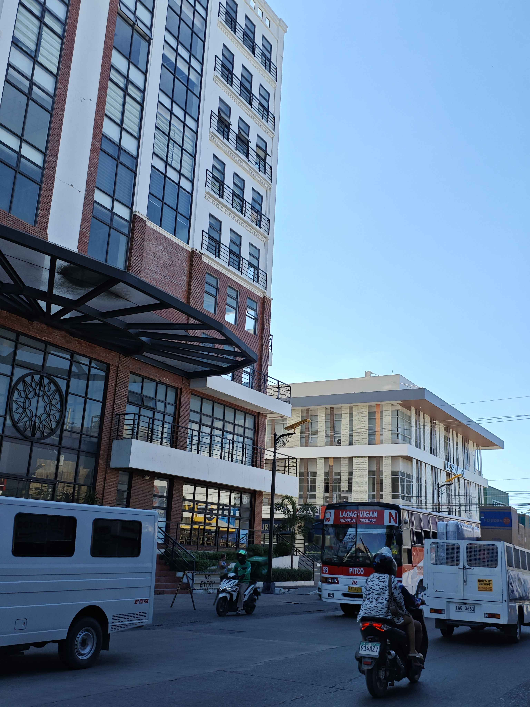

A transportation accessibility advocacy
Every journey deserves a way home.
Getting from one place to another should not depend on your location, your income, or what time you finish your day. HATID advocates for commuting that is accessible, affordable, available, safe, and reliable for every Filipino.
A school advocacy project exploring the everyday realities of Filipino commuters.

HATID / LOCAL COMMUTE
A JOURNEY
WITHIN
REACH
WITHIN
REACH
ACCESSIBILITY ✳ AFFORDABILITY ✳ AVAILABILITY ✳ SAFETY & RELIABILITY ✳ EVERY JOURNEY MATTERS ✳